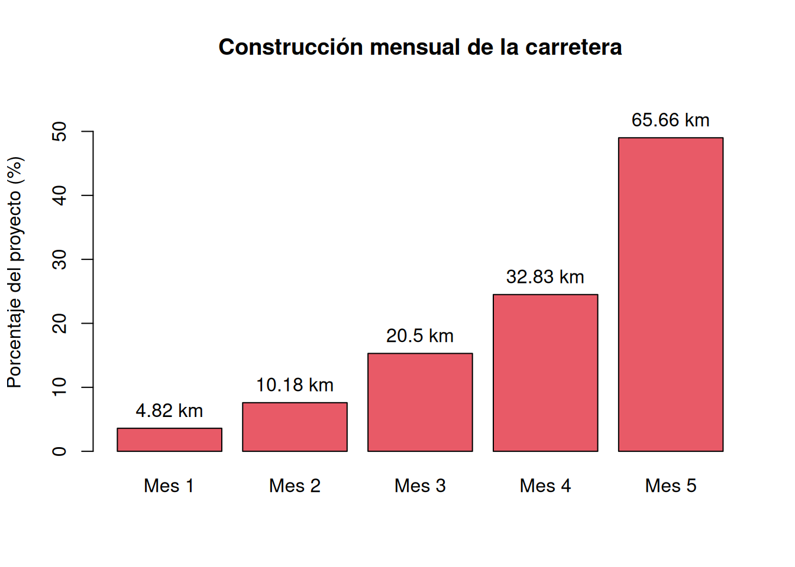
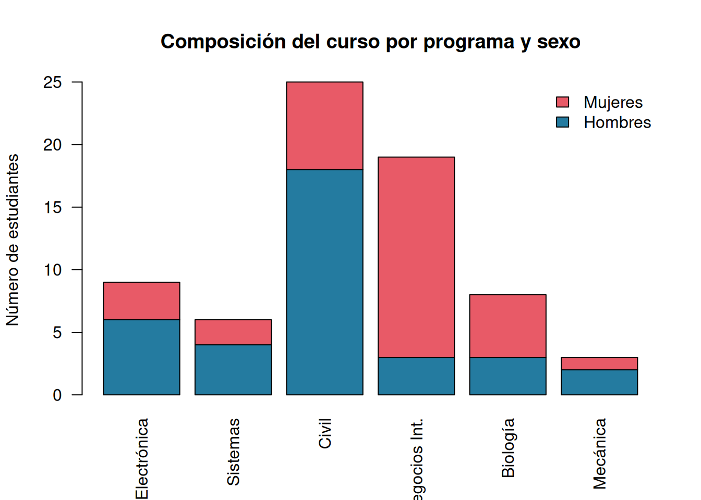
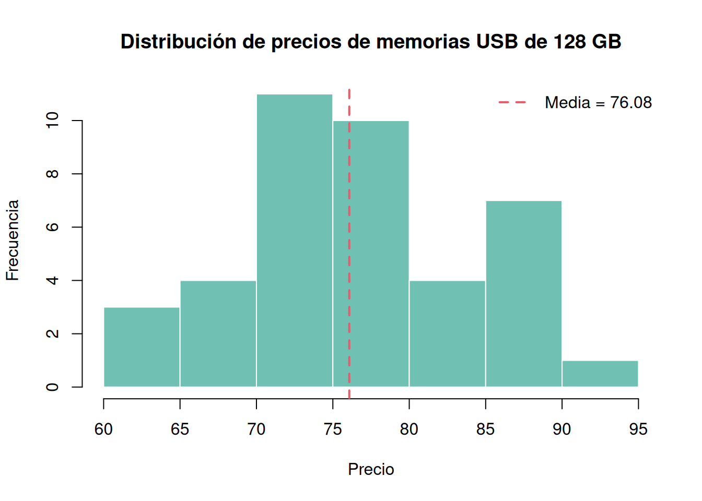
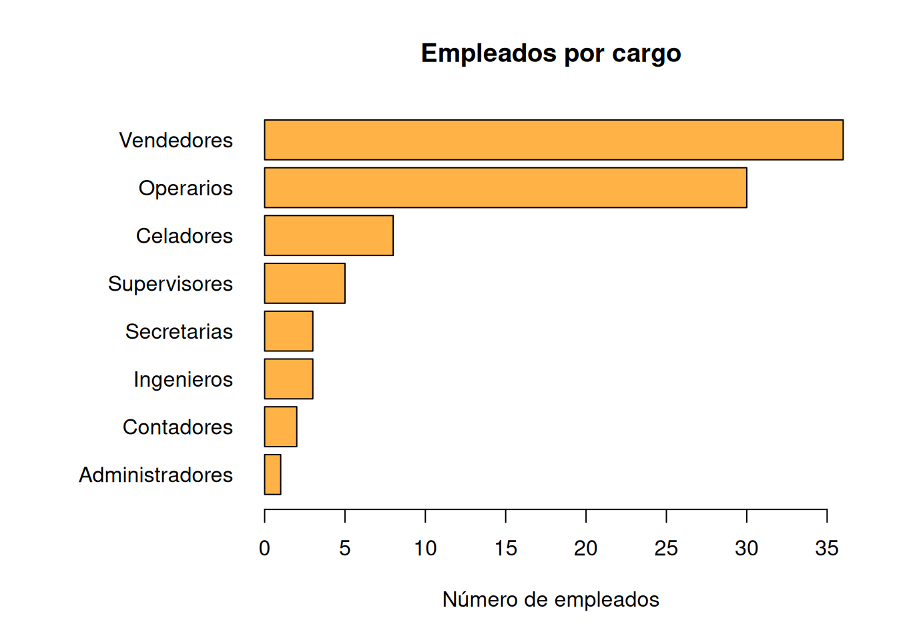

La clasificación depende de la naturaleza de la variable, no del número que se use para codificarla.
| N.º | Variable | Tipo | Subtipo | Escala | Justificación breve |
|---|---|---|---|---|---|
| 1 | Botellas producidas diariamente | Cuantitativa | Discreta | Razón | Es un conteo y el cero indica ausencia de producción. |
| 2 | Defectos por gabinete | Cuantitativa | Discreta | Razón | Es un conteo con cero absoluto. |
| 3 | Tiempo de respuesta | Cuantitativa | Continua | Razón | Puede tomar valores reales y cero significa ausencia de tiempo transcurrido. |
| 4 | Desperdicio de hojas por día | Cuantitativa | Discreta | Razón | Si se mide como número de hojas, es un conteo con cero absoluto. |
| 5 | Tipo de defecto | Cualitativa | No aplica | Nominal | Las categorías no tienen un orden natural. |
| 6 | Temperatura de cocción | Cuantitativa | Continua | Intervalo | En °C o °F las diferencias son interpretables, pero el cero no es ausencia de temperatura. |
| 7 | Espesor de las piezas | Cuantitativa | Continua | Razón | Tiene cero absoluto y admite comparaciones de proporciones. |
| 8 | Técnica de mezclado | Cualitativa | No aplica | Nominal | Identifica métodos sin orden natural. |
| 9 | Corriente en microamperios | Cuantitativa | Continua | Razón | El cero representa ausencia de corriente y las razones son interpretables. |
| 10 | Grado de satisfacción | Cualitativa | No aplica | Ordinal | Sus categorías poseen un orden natural. |
| 11 | Nota del examen | Cuantitativa | Continua* | Intervalo | Las diferencias son interpretables; una nota cero no implica ausencia absoluta del atributo. |
| 12 | Nivel de estrés | Cualitativa | No aplica | Ordinal | Categorías como bajo, medio y alto están ordenadas. |
| 13 | Marca del teléfono | Cualitativa | No aplica | Nominal | Son nombres de categorías sin orden. |
| 14 | Llamadas recibidas por hora | Cuantitativa | Discreta | Razón | Es un conteo con cero absoluto. |
| 15 | Año de fabricación | Cuantitativa | Discreta | Intervalo | Las diferencias entre años tienen sentido, pero el origen es convencional. |
| 16 | Distancia recorrida | Cuantitativa | Continua | Razón | Tiene cero absoluto y permite comparar proporciones. |
| 17 | Nivel de prioridad | Cualitativa | No aplica | Ordinal | Las categorías tienen jerarquía. |
| 18 | Código de identificación | Cualitativa | No aplica | Nominal | Aunque use números, funciona únicamente como etiqueta. |
* Si la institución solo admite puntos enteros, la nota puede tratarse como cuantitativa discreta.
| N.º | Concepto |
|---|---|
| 1 | Mediana |
| 2 | Coeficiente de asimetría |
| 3 | Varianza |
| 4 | Desviación absoluta mediana (MAD) |
| 5 | Coeficiente de variación (CV) |
| 6 | Desviación estándar |
| 7 | Rango intercuartílico (RIC o IQR) |
| 8 | Desviación media absoluta |
| 9 | Rango |
| 10 | Moda |
| 11 | Media aritmética |
| 12 | Curtosis |
| 13 | Cuartiles (\(Q_1\), \(Q_2\) y \(Q_3\)) |
| 14 | Puntaje estandarizado o puntaje \(z\) |
| 15 | Frecuencia relativa |
| 16 | Frecuencia acumulada |
| 17 | Percentil |
| 18 | Valor atípico |
| 19 | Media ponderada |
| 20 | Media recortada |
El gráfico de barras permite comparar claramente el porcentaje y los kilómetros construidos en cada mes. Los porcentajes suman 100% y los kilómetros suman 134.
mes <- factor(paste("Mes", 1:5), levels = paste("Mes", 1:5))
porcentaje <- c(3.6, 7.6, 15.3, 24.5, 49.0)
kilometros <- 134 * porcentaje / 100
avance <- data.frame(mes, porcentaje, kilometros)
avance mes porcentaje kilometros
1 Mes 1 3.6 4.824
2 Mes 2 7.6 10.184
3 Mes 3 15.3 20.502
4 Mes 4 24.5 32.830
5 Mes 5 49.0 65.660bp <- barplot(
porcentaje, names.arg = mes, col = "#E85A67",
ylim = c(0, 56), ylab = "Porcentaje del proyecto (%)",
main = "Construcción mensual de la carretera"
)
text(bp, porcentaje, labels = paste0(round(kilometros, 2), " km"), pos = 3)
Los avances son aproximadamente 4.82, 10.18, 20.50, 32.83 y 65.66 km. Las pequeñas diferencias al sumar valores redondeados se deben al redondeo decimal.
Una gráfica de barras apiladas muestra simultáneamente la composición por programa y por sexo.
programa <- c("Electrónica", "Sistemas", "Civil", "Negocios Int.",
"Biología", "Mecánica")
hombres <- c(6, 4, 18, 3, 3, 2)
mujeres <- c(3, 2, 7, 16, 5, 1)
estudiantes <- rbind(Hombres = hombres, Mujeres = mujeres)
colnames(estudiantes) <- programa
estudiantes Electrónica Sistemas Civil Negocios Int. Biología Mecánica
Hombres 6 4 18 3 3 2
Mujeres 3 2 7 16 5 1barplot(
estudiantes, beside = FALSE, col = c("#247BA0", "#E85A67"),
las = 2, ylab = "Número de estudiantes",
main = "Composición del curso por programa y sexo",
legend.text = rownames(estudiantes),
args.legend = list(x = "topright", bty = "n")
)
Hay 70 estudiantes: 36 hombres y 34 mujeres. Ingeniería Civil es el programa con más estudiantes (25).
Como es una variable cuantitativa, un histograma representa adecuadamente su distribución. Se añade el diagrama de tallo y hojas pedido implícitamente por el código original.
x <- c(60,63,64,67,68,68,68,70,70,71,71,72,72,72,73,73,74,74,
75,75,75,75,75,76,76,77,77,79,80,83,83,84,85,86,87,88,
88,89,89,91)
hist(
x, breaks = seq(60, 95, by = 5), right = FALSE,
col = "#70C1B3", border = "white",
xlab = "Precio", ylab = "Frecuencia",
main = "Distribución de precios de memorias USB de 128 GB"
)
abline(v = mean(x), col = "#E85A67", lwd = 2, lty = 2)
legend("topright", legend = paste("Media =", round(mean(x), 2)),
col = "#E85A67", lwd = 2, lty = 2, bty = "n")
stem(x)
The decimal point is 1 digit(s) to the right of the |
6 | 034
6 | 7888
7 | 00112223344
7 | 5555566779
8 | 0334
8 | 5678899
9 | 1Como el cargo es cualitativo nominal, se utiliza un diagrama de barras. Las barras se ordenan para facilitar la comparación.
empleados <- c(
Administradores = 1, Ingenieros = 3, Operarios = 30,
Celadores = 8, Contadores = 2, Secretarias = 3,
Supervisores = 5, Vendedores = 36
)
empleados <- sort(empleados)
par(mar = c(5, 10, 4, 2) + 0.1)
barplot(
empleados, horiz = TRUE, las = 1, col = "#FFB347",
xlab = "Número de empleados", main = "Empleados por cargo"
)
La empresa tiene 88 empleados. Vendedores (36) y operarios (30) representan conjuntamente 66 empleados, es decir, 75% del total.
Sea \(X\) el peso en libras y \(Y\) el peso en kilogramos. Como \(1\text{ kg}\simeq2.2\text{ lb}\),
\[Y=\frac{X}{2.2}.\]
Por las propiedades de las transformaciones lineales,
\[\bar{Y}=\frac{\bar{X}}{2.2}, \qquad s_Y=\frac{s_X}{2.2}.\]
En consecuencia, tanto la media como la desviación estándar quedan divididas por 2.2 (o multiplicadas por aproximadamente 0.4545). La varianza queda dividida por \(2.2^2=4.84\). El coeficiente de variación no cambia, pues numerador y denominador se multiplican por la misma constante positiva.
Se cuenta con una muestra de \(n=10\) días y no hay valores perdidos. La producción diaria promedio fue de 1.45 unidades de la escala reportada, mientras que la mediana fue 1.40. El 50% central de las observaciones estuvo entre 1.30 y 1.60, por lo que el rango intercuartílico fue 0.30. El mínimo fue 1.10 y el máximo 1.90; así, el rango total fue
\[1.90-1.10=0.80.\]
La desviación estándar fue 0.25 y el coeficiente de variación fue 0.17, es decir, aproximadamente 17%. Esto indica una variabilidad relativa moderada alrededor de la media. La desviación absoluta mediana fue 0.30, una medida robusta de dispersión.
La asimetría de 0.32 sugiere una leve cola hacia la derecha. Sin embargo, con solo 10 observaciones y un error estándar de asimetría de 0.69, no hay evidencia descriptiva fuerte de una asimetría importante: el cociente \(0.32/0.69\approx0.46\) es pequeño. La curtosis de -1.20 indica una distribución más aplanada y con colas más ligeras que una normal, aunque esta apreciación también debe tomarse con cautela por el tamaño muestral.
En síntesis, la máquina etiquetó alrededor de 1.45 unidades por día, con observaciones relativamente concentradas, sin una asimetría marcada. Para evaluar estabilidad del proceso o cumplimiento de metas harían falta la serie cronológica, la unidad exacta (por ejemplo, cientos o miles de botellas) y los límites o la meta de producción; el resumen por sí solo no permite concluir que el proceso esté bajo control.
Nota: el resultado impreso no informa la unidad ni contiene los datos originales. Por eso no es correcto afirmar literalmente “1.45 botellas por día” sin aclarar la escala en la que se registró la variable.